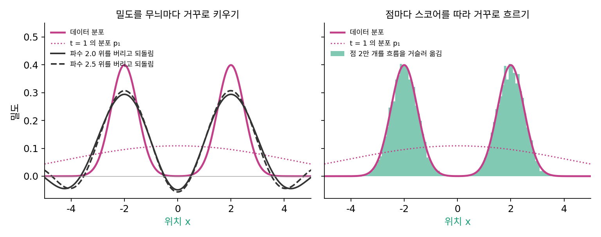

거꾸로 흐르기: 스코어를 따라 퍼지기 전으로
퍼지는 동안 각 자리의 확률이 움직이는 속도를 알았다. 이제 처음 물음으로 돌아가자. 이 흐름을 거꾸로 따라가면 퍼지기 전의 분포를 되찾을 수 있을까? 레이더로 말하면, 짙은 안개 속에서 출발한 참가자들이 안개가 걷히는 속도에 맞춰 바늘 쪽으로 걸으면 모두 드래곤볼에 닿을까?
두 봉우리를 되찾기
시간을 1에서 0으로 거꾸로 걸으면서, 매 순간 그 시간의 속도와 반대로, 곧 스코어 쪽으로 점을 옮긴다.
±2에 봉우리를 둔 두 봉우리 분포(각 표준편차 0.5)를 D = 4로 t = 1까지 퍼뜨리면 가운데가 가장 높은 한 봉우리가 된다(잡음 분산 8, 표준편차 3.48). 여기서 뽑은 점 2만 개를 정확한 스코어로 t = 0까지 거꾸로 옮기면 |x|의 평균이 1.996, 표준편차가 0.498로 두 봉우리가 그대로 돌아온다. 같은 2만 개의 도착점 가운데 |x| < 1인 것은 2.32%로, 처음 분포에서 그 구간에 있을 확률 2.28%와 맞는다.
이 길은 왜 불안정하지 않을까? 점 하나하나는 매끄러운 속도장(자리마다 속도가 하나씩 정해진 것)을 따라 움직일 뿐, 끝 분포에서 반올림 오차 아래로 가라앉은 촘촘한 무늬를 되살릴 필요가 없다. 대신 t = 1부터 0까지 모든 시간의 스코어를 알아야 한다. 촘촘한 무늬의 정보는 끝 분포에서는 사라졌지만, t가 작을 때의 스코어 속에는 남아 있기 때문이다.
코드: 밀도를 거꾸로 푸는 길과 점을 거꾸로 옮기는 길
같은 t = 1의 분포를 두 방법으로 되돌린다. 첫째는 푸리에 성분마다 e^(+Dk²t)를 곱하는 것이고(k는 파수), 둘째는 점을 스코어 쪽으로 거꾸로 옮기는 것이다.
import numpy as np
D, s0 = 4.0, 0.5 # σ_t² = 2Dt 이라 t = 1 에서 잡음 분산 8
mus = np.array([-2.0, 2.0]) # 데이터: ±2 에 봉우리, 각 표준편차 0.5
def p(x, t): # 시간 t 의 분포: 봉우리마다 분산이 s0² + 2Dt
v = s0**2 + 2 * D * t
return sum(np.exp(-(x - m)**2 / (2 * v)) for m in mus) / (2 * np.sqrt(2 * np.pi * v))
def score(x, t): # s = ∂ log p_t / ∂x (넘침을 막으려고 로그 가중치로 계산)
v = s0**2 + 2 * D * t
lw = np.array([-(x - m)**2 / (2 * v) for m in mus]); w = np.exp(lw - lw.max(0)); w /= w.sum(0)
return ((mus[:, None] - x) * w).sum(0) / v
# (1) 밀도를 거꾸로: 푸리에 성분마다 e^(+Dk²t) 를 곱해 t = 1 에서 0 으로
x = np.linspace(-20, 20, 800, endpoint=False); k = 2 * np.pi * np.fft.fftfreq(800, d=x[1] - x[0])
P1 = np.fft.fft(p(x, 1.0))
for kc in (2.0, 2.5, 3.0): # 파수 kc 위의 성분은 버리고 되돌린다
keep = np.abs(k) < kc
back = np.real(np.fft.ifft(np.where(keep, P1 * np.exp(D * np.where(keep, k, 0)**2), 0)))
print(f"kc = {kc}: x = 2 에서 {back[np.argmin(abs(x - 2))]:10.3f} (참값 {p(2.0, 0):.3f}), 가장 작은 값 {back.min():10.3f}")
# (2) 점을 거꾸로: t 를 1 에서 0 으로 줄이며 +D·s 쪽으로 옮긴다 (룽게–쿠타 4차, 4000 걸음)
rng = np.random.default_rng(0)
xs = mus[rng.integers(0, 2, 20000)] + np.sqrt(s0**2 + 2 * D) * rng.standard_normal(20000)
start = xs.copy(); h = 1 / 4000; t = 1.0
f = lambda x, t: D * score(x, t)
for _ in range(4000):
k1 = f(xs, t); k2 = f(xs + h / 2 * k1, t - h / 2); k3 = f(xs + h / 2 * k2, t - h / 2); k4 = f(xs + h * k3, t - h)
xs = xs + h / 6 * (k1 + 2 * k2 + 2 * k3 + k4); t -= h
print(f"t = 1 의 표준편차 {start.std():.3f} → t = 0: |x| 의 평균 {np.abs(xs).mean():.3f}, |x| 의 표준편차 {np.abs(xs).std():.3f}, "
f"|x| < 1 인 비율 {np.mean(np.abs(xs) < 1):.4f}")
print(f"부호가 그대로인 점 {np.mean(np.sign(xs) == np.sign(start)):.3f}, 순서가 그대로 {np.all(np.argsort(xs) == np.argsort(start))}")
# kc = 2.0: x = 2 에서 0.294 (참값 0.399), 가장 작은 값 -0.049
# kc = 2.5: x = 2 에서 0.307 (참값 0.399), 가장 작은 값 -0.057
# kc = 3.0: x = 2 에서 9244.304 (참값 0.399), 가장 작은 값 -10235.627
# t = 1 의 표준편차 3.477 → t = 0: |x| 의 평균 1.996, |x| 의 표준편차 0.498, |x| < 1 인 비율 0.0232
# 부호가 그대로인 점 1.000, 순서가 그대로 True
첫째 방법은 파수 2.5까지 살려도 봉우리 높이가 참값의 77%에 그치고 음수 밀도가 생기며, 3까지 살리면 10⁴ 크기로 폭발한다. 둘째 방법은 두 봉우리를 되찾는다. (2)의 한 걸음은 위 식의 걸음을 네 번 물어 평균 낸 것(룽게–쿠타 4차)일 뿐, 하는 일은 같다.

거꾸로 따라간 이 길에는 붙은 이름이 있고, 걸음마다 잡음을 다시 조금씩 넣으며 걷는 다른 길도 있다. 둘의 이름과 차이는 샘플을 뽑는 길을 본격적으로 다룰 때 견준다. 여기서 기억할 것은 하나다. 앞으로 가는 쪽은 식 하나로 끝나지만, 거꾸로 가는 쪽은 모든 시간의 스코어가 있어야 한다.
ML에서: 출발점은 가우시안
실제 생성 모델은 t = 1의 분포를 정확히 모른다. 그래서 같은 분산의 가우시안에서 점을 뽑아 출발하고, 신경망이 배운 스코어로 거꾸로 걷는다. 출발 분포가 틀린 만큼 도착도 틀릴 테니, 가장 짙은 잡음을 얼마나 크게 잡아야 가우시안에서 출발해도 되는지가 설계의 물음이 된다.
문제 6. 터널 속 자동차
추월이 금지된 1차선 터널에서 모든 차는 그 자리의 제한 속도를 정확히 지킨다. 입구(0 km)부터 3 km까지는 시속 60 km, 그 뒤로는 시속 90 km다. 차 A는 1 km 지점, 차 B는 입구에 동시에 있다. (가) B가 A를 따라잡을 수 있는가? (나) 6분 뒤 두 차의 간격은? (다) 이런 차들이 입구에 1 km 간격으로 줄지어 들어온다면, 3 km를 지난 구간의 차 밀도(1 km당 차 수)는 얼마가 되는가?

B가 A보다 1 km 뒤에 있으니까 6분 뒤에도 1 km 뒤 아니에요? 둘이 같은 길을 같은 규칙으로 달리니까요.

6분 뒤에 둘이 어느 구간에 있는지 계산해 봐요.

A는 1 km에서 2분 만에 3 km에 닿고, 남은 4분은 시속 90 km라 6 km 더 가서 9 km예요. B는 3분 만에 3 km에 닿고 남은 3분에 4.5 km 가서 7.5 km예요. 간격이 1.5 km예요. 늘었네요?

간격은 변하는데 시간 차는 그대로 1분이야. B는 A가 1분 전에 지난 자리를 1분 뒤에 똑같은 속도로 지나가니까. 그래서 따라잡지도 멀어지지도 않고, 빠른 구간에서는 1분 차가 더 긴 거리로 늘어날 뿐이야.

(가)는 더 일반적으로 말할 수 있어요. 속도가 자리로만 정해지면, 두 차가 나란히 서는 순간이 올 수 있을까요?

한 번이라도 같은 자리에 서면 그 뒤로는 속도가 늘 같아서 영원히 붙어 다녀야 해요. 거꾸로 따라가 보면 처음부터 같은 자리였어야 하고요. 그러니까 순서는 절대 안 바뀌어요.
(다)는 간격이 1 km에서 1.5 km로 늘었으니까 밀도는 1에서 2/3대로 줄어요. 차는 없어지지 않는데 간격이 늘어난 만큼 묽어지는 거네요.
그래요. 흐름은 점의 순서를 지키면서 그 사이 간격을 늘이거나 줄이고, 밀도는 그만큼 바뀌어요.
문제 7. 스코어를 따라 거꾸로 흐르기
데이터는 ±2에 봉우리를 둔 두 봉우리 분포(각 표준편차 0.5)다. 이번에는 D = 16으로 t = 1까지 퍼뜨려 잡음 분산을 32로 키웠다. 시간 t의 분포는 분산이 0.25 + 32t인 두 가우시안의 평균이라 스코어를 정확히 계산할 수 있다. 이 분포에서 점 2만 개를 뽑는다. (가) 점들을 흐름을 거꾸로 따라 t = 0까지 옮기면 무엇이 되는가? (나) 정확한 스코어 대신, 그 시간의 분포와 평균·분산이 같은 가우시안의 스코어를 쓰면? (다) 점들은 서로 앞지르는가? x = 0에 있던 점은 어디로 가는가? (풀어 본 뒤 위젯 1의 「문제 7 불러오기」로 확인해 보자.)

잡음 분산이 32면 표준편차가 6이나 되는데, 봉우리가 둘이었다는 흔적이 남아 있기나 할까?
속도가 v = −Ds니까 이걸 그대로 쓰고 시간만 1에서 0으로 줄여 가며 옮겼어요. 그런데… 표준편차가 6.0에서 54가 됐어요. 되돌리려던 게 오히려 아홉 배로 퍼졌어요.
가우시안 구름 문제랑 같은 실수야. 시간을 거꾸로 가니까 −Ds × (시간 간격)을 빼야, 곧 +Ds 쪽으로 옮겨야 해.

아, 그러네. +Ds 쪽으로 옮기면… |x|의 평균이 1.992, 표준편차가 0.499예요. |x| < 1인 점은 2.4%고요. 두 봉우리가 그대로 돌아왔어요!
밀도를 무늬로 되돌릴 때는 잡음 분산 2만 돼도 6보다 촘촘한 무늬를 잃었어요. 여기서는 분산 32에서 출발해도 왜 될까요?
무늬로 되돌릴 때는 끝 분포 하나에서 반올림 아래로 가라앉은 무늬를 되살려야 했어요. 여기서는 시간마다 스코어를 따로 받아요. 가는 무늬의 정보가 끝 분포에는 없지만 t가 작을 때의 스코어에는 들어 있으니까요. 흔적은 끝 모양이 아니라 흐름 쪽에 남아 있었어요.
그럼 (나)로 확인해 봐요. 스코어의 어느 부분이 그 정보를 담고 있을까요?

평균·분산이 같은 가우시안의 스코어는 −x/(4.25 + 32t)예요. 이걸로 옮기면 표준편차 2.04인 한 봉우리가 나와요. |x| < 1인 점이 38%고요. 평균과 분산은 맞는데 두 봉우리는 사라졌어요.

가우시안 스코어로는 모든 점이 같은 비율로 쪼그라들기만 하니까 한 봉우리가 둘로 갈라질 수가 없네. 갈라지게 하는 건 t가 작을 때 스코어가 x = 0 근처의 점들을 양쪽 봉우리로 밀어내는 부분이야. 두 봉우리라는 정보는 스코어의 모양에 있어.
(다)는요?
순서는 한 번도 안 바뀌었어요. 부호도 전부 그대로고요. t = 1에서 오른쪽 절반에 있던 점은 모두 오른쪽 봉우리로 갔어요.
터널의 차들이랑 같아. 속도가 자리로만 정해지니까 서로 추월할 수 없지.
x = 0에 있던 점은 스코어가 0이라 계속 0에 있겠네요. 근데 t = 1에서는 0이 가장 높은 곳이었는데, t = 0에서는 두 봉우리 사이 골짜기예요.

가장 흔한 자리에서 출발한 점이 가장 드문 자리에 도착하는 거네. 0 근처 점들은 조금만 오른쪽이어도 오른쪽 봉우리로 가 버리니까.

그래요. 0 둘레의 좁은 구간이 넓게 늘어나서 골짜기의 낮은 밀도가 돼요.

터널에서 차 간격이 늘어나면 차 밀도가 줄던 거랑 같은 모양이에요. 점 하나의 도착점은 출발점으로 정해지고, 밀도는 간격이 늘고 주는 만큼 바뀌고요.

맞아요. 앞으로는 열 방정식을 따라 퍼뜨리고, 거꾸로는 스코어로 흐름을 거슬러 올라가요. 앞으로 가는 쪽은 식 하나로 끝나지만 거꾸로 가는 쪽은 모든 시간의 스코어가 필요하고, 그게 신경망이 배울 거예요.

같은 방정식인데, 밀도를 거꾸로 풀려고 하면 막히고 흐름을 거꾸로 따라가면 열리네.
문제 8. 가우시안에서 출발하면
실제 생성 모델은 t = 1의 분포를 모르므로 평균 0, 분산이 같은 가우시안에서 출발한다. 두 봉우리 데이터(±2, 각 표준편차 0.5)에 잡음 분산 σ₁² = 2, 8, 32를 섞은 세 경우에서, 가우시안에서 점 2만 개를 뽑아 정확한 스코어로 t = 0까지 되돌린다. (가) 도착한 점의 |x|의 표준편차와 |x| > 3.5인 비율을 처음 분포(0.5, 0.13%)와 견주어라. (나) 가장 짙은 잡음은 얼마나 크게 잡아야 하는가? (풀어 본 뒤 위젯 1의 「문제 8 불러오기」로 σ₁² = 2인 경우를 확인해 보자.)
스코어가 정확하니까 어디서 출발하든 데이터로 돌아오지 않을까요? 가우시안이나 t = 1의 분포나 평균, 분산이 같잖아요.
돌려 봐요.
σ₁² = 2에서는 |x|의 표준편차가 0.574, |x| > 3.5인 점이 0.93%예요. 처음 분포는 0.13%인데 일곱 배나 돼요. 8이면 0.509와 0.22%, 32면 0.501과 0.13%로 맞아요.

흐름은 점마다 출발점으로 도착점을 정하니까, 출발 분포가 틀린 만큼 도착 분포도 틀리겠지. 잡음 분산 2짜리 분포는 아직 두 봉우리 꼴이 남아서 가우시안과 꽤 다를 거야.
그 차이를 숫자로 재 봐요. 두 분포가 얼마나 다른지 재는 KL 발산으로요.
t = 1의 분포와 가우시안 사이의 KL이 σ₁² = 2에서 0.038, 8에서 0.0013, 32에서 0.000013이에요. 잡음을 짙게 섞을수록 「봉우리가 몇 개였는지」를 잊어서 가우시안과 구별이 안 돼요.
그럼 (나)는, 데이터에서 가장 먼 두 점 사이도 잡음이 덮을 만큼 크게요?
송(Yang Song)과 에르몬(Stefano Ermon)이 2020년 논문에서 한 권고가 바로 그거예요. 가장 큰 잡음의 표준편차를 「학습 데이터 두 점 사이 유클리드 거리의 최댓값만큼」 크게 잡으라고 했어요. CIFAR-10에서는 그 값이 50이에요. 같은 논문은 CIFAR-10 그림 두 장 사이 거리의 중앙값이 18쯤이라, 가장 큰 잡음을 1로 잡으면 다양한 그림이 나오기 어렵다는 것도 보였고요.
시험 범위를 넓게 잡아야 어느 단원에서 나오든 대비가 되는 거랑 같네요.